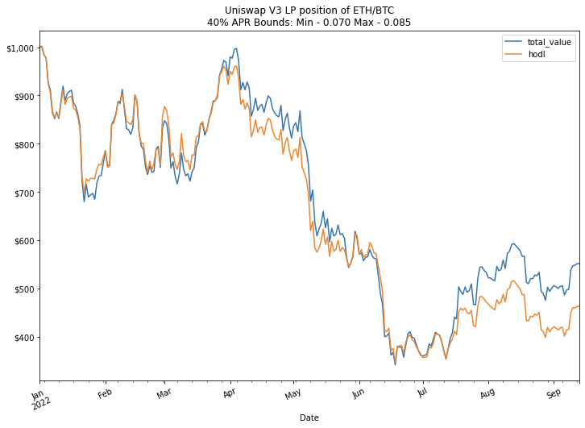
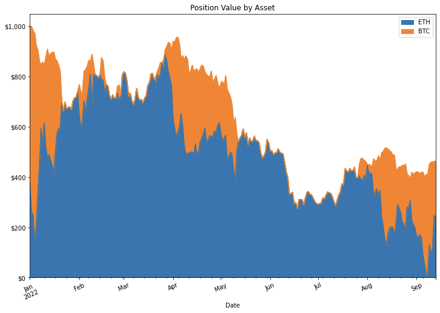
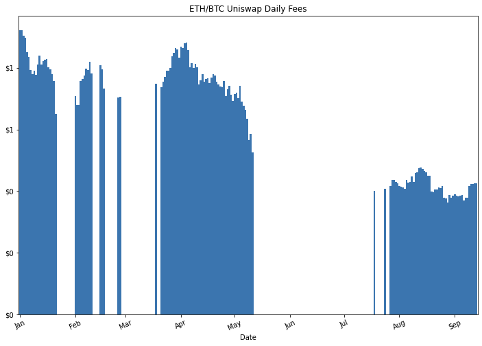
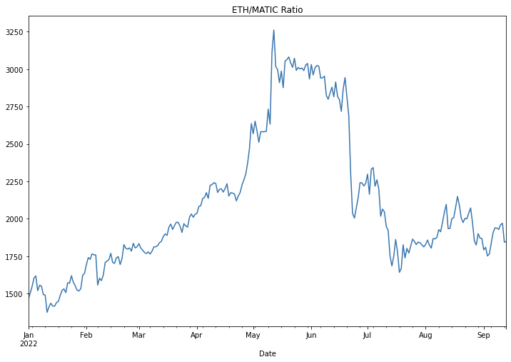
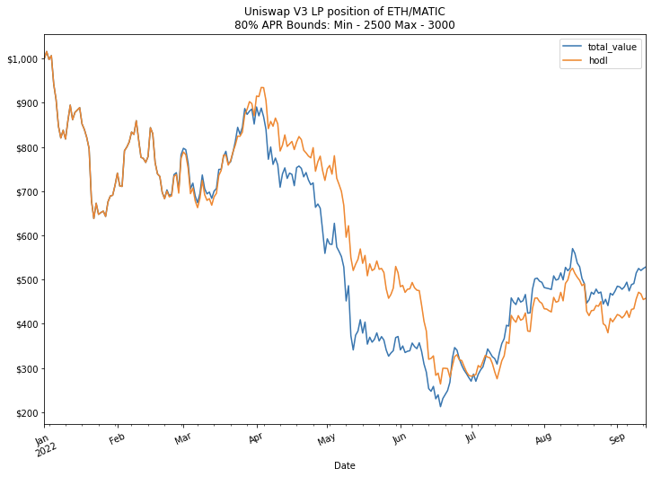
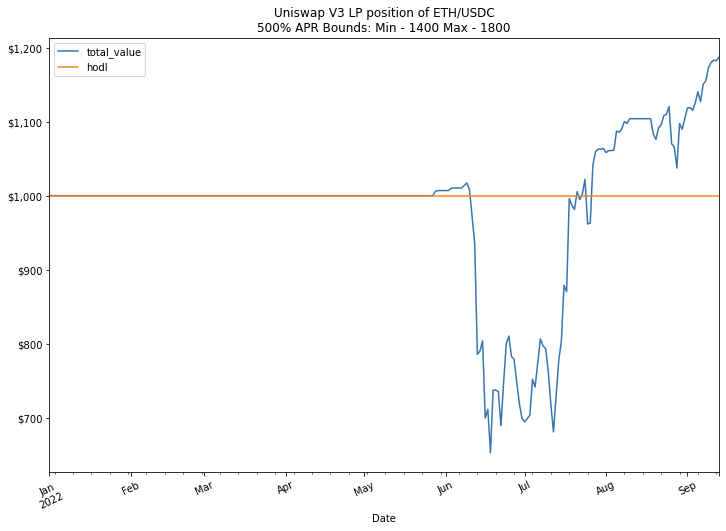
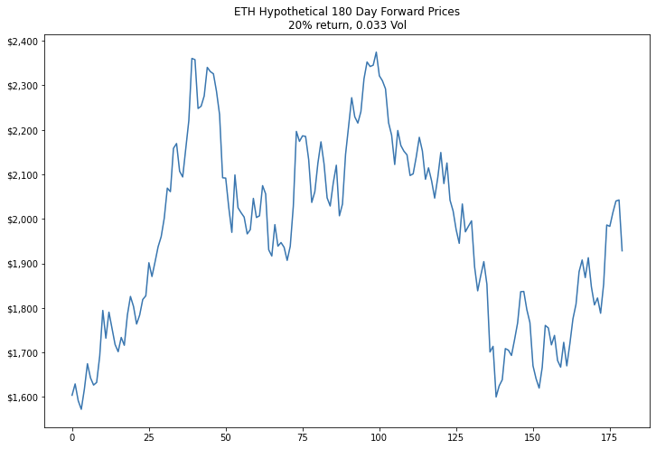
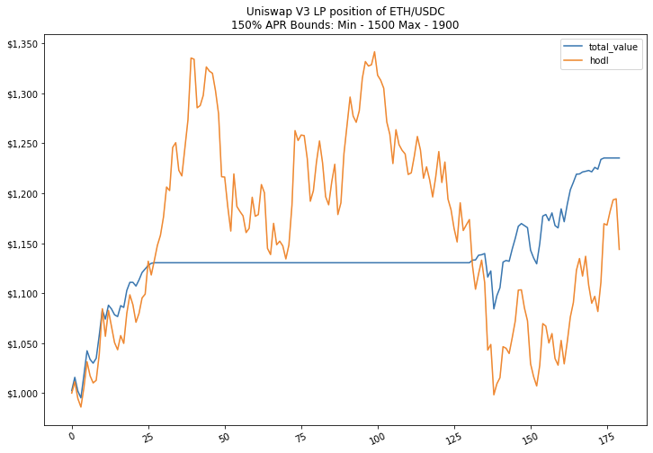

Uniswap V3 Pt.2
A Uniswap v3 position simulator
The Simulatoorrr 🎰
What did I make? A Uniswap V3 position simulator that takes two price series (in a common currency, for my examples USD), your lower and upper bounds for the V3 position, the amount in that currency you want to invest, and an APR for when the position is in range. From those inputs we get the amount of each asset for every day of our series, the daily fee we got (in common currency), the total value of the position (pool + fees), and a hodl comparison.
Some assumptions and limits of this function are that the fees are not reinvested and are given in the common currency so this assumes you cashed out and have no extra exposure due to your fees. While compounding often can supercharge your returns I left that feature out of this version. I do compound pretty frequently though on Uni V3 position on L2s where gas is cheap. This simulator also assumes a static APR which we should know is not the case but I think it's fine to pick an average anyway since this is meant to just give us an idea of what a position would do not perfectly simulate for the past.
With all that here is the code for you to check on my github, the function is at the bottom also check out the notebook in the same repo that has exaples for all the functions there.
UPDATE
Ok I bullied myself into adding the ability to compound fees. Considering Uniswap is supported on the major L2s where gas is cheap, and I myself reinvest collected fees daily, I decided to incorporate that ability into my python function. It's only daily but the point of showing the distinction is there. Enjoy.
For the visual learners
While I myself am definitely a visual learner I have difficulty imagining anyone who read my last post and instantly was able to comprehend the implications of the concentrated liquidity mechanisms in Uniswap V3, especially for profit and loss perspectives. So I took that math and made it a python function where we can take a USD price series of two assets, our upper and lower bounds, an APR, and the amount we want to invest, and out pops a table with our pool value, our daily fees, the amount we have of each asset, and a “hodl” comparison if we instead did nothing at all.
Now we can see in a super sik graph what our values would look like with our own parameters on a Uni V3 LP position, from the more dramatic rebalancing to the conditional fees only when in range. Here's this bad boy in action.
Line go down but at least it's less down thanks to the fees accumulated. Importantly it's significantly above the "hodl" amount
The only big assumption we have to make is on the fee APR we would be receiving, also we should realize the hindsight bias we know about where prices are and what the ETH/BTC ratio was. This particular plot still reveals information that I would not have intuitively expected with hindsight, mostly on the significant increase of value in June when the ETH/BTC ratio was low. Let's look at more pieces of this puzzle.
The breakdown of which asset you hold varies quiet wildly as the ETH/BTC ratio changes significantly due to the narrow range
These highly correlated assets are changing their makeup quite significantly under the hood. While this graph demonstrates the change in position composition, for correlated assets I think the important graph is the position plus fees compared to hodling the initial amounts shown in the first graph. That way we know if we are generating some positive return from having our assets in the LP.
We can also see our bounds for the ETH/BTC ratio, again bearing in mind we chose them with hindsight, and where the limits are. But we can see when the ratio is outside the bounds we have only one asset in our makeup.

The areas where we earned fees are now very clear and this helps visualize our asset makeup changes
We don't receive fees when the ratio is out of bounds, so that 40% APR becomes much lower when we account for it only being active in the ratios we give. Here's a visualization of that as well.
Daily fees measured in USD get smaller when our pool value is smaller
Much better to see these fees accumulate
Hopefully the visual learners have a much better grasp now, but what else can we do with this ability to simulate?
Being Crypto Captain Hindsight
With our ability to backtest let's see how we can position ourselves best to profit when we already know the outcomes. In other words, in what situations would we be able to profit the most.
We'll try this with correlated assets again. This time ETH and MATIC. First let's look at the ETH/MATIC ratio and see if we can make some predictions.
If we knew this surge in May was coming could we set a single sided position with bounds that we know will come true? Let's put the bounds at 2,500 and 3,000 and see what an LP position would do with a high yield as well given our narrow range.
Eh. Not amazing. some return but that mostly came from the yield while we were in range. The biggest problem with this is even if we know what the ratio will be the assets are highly correlated and by the nature of Uni V3 we will always acquire the less valuable asset as it moves through a range. The best play will be if we really think we know what the ratios will be, is to set our bounds close so that our APR is high when it does come in range. You can check out metacrypt.org that quotes some returns and see with narrow ranges three digit yields are possible.
Stable/Crypto pairs, real yields of 100+%
Ok we saw correlated assets aren't the best for outsized returns, especially during this bear market (however they're great when both assets go up). But since we're measuring performance in USD we might as well use stable coin pools. Now stable coin pools are not correlated like the previous assets we worked with, and given that our performance assessment in USD any change in price of our crypto asset will severely alter our asset makeup with the accelerated impermanent loss.
Now impermanent loss has frightened the hearts of many DeFi degens but something I've been yelling about since the Uni V2 days (mostly to no one) is that as long as your yield exceeds the IL over your time frame, it was still smart to provide liquidity. See my post advocating for leverage here. So with that said, the easiest way to escape real impermanent loss is with high yields. And Uniswap V3 is just the solution to do that.
We've already seen that concentrating our liquidity tighter gets us higher yields in my Pt. 1 post. So let's apply that and see what the implications would be. Again we'll have the benefit of hindsight with the crypto downturn, but let's say back in January you thought ETH was still going to the moon but had some stable coins and wanted to protect your downside. With ETH being at $3700 you though you could place some liquidity at around half that price in a relatively narrow range just in case ETH went there you would both acquire the ETH at a lower price as well as receive a high yield for it. So you mint a pool of WETH/USDC with bounds of 1400 and 1800. Unthinkable at the time but it's only costing you USDC since it's out of range. Now metacrypt.org gives an estimated yield of 500% right now (and even more on L2s) but to be conservative to that quote I'll put a yield of 250% for this hypothetical position.
We're not measuring drawdowns 😛
Ok so that worked. That has a real return of an annualized 27.7% on your USDC. Also notice that the hodl value is a straight line since your initial deposit was 100% USDC. Also also of note is when those scary days happened and ETH got to $900 we would have had 100% ETH at that time and our position would have been down. But had you asked yourself in January if you would like to buy ETH at an average cost of $1550 you probably would have been pretty ok with that. And now your yields are so high that this position will remain profitable if ETH continues at these levels or above. And you didn't have to risk any of the ETH you had in January. Just some measly USDC.
But what about the future?
With this ability to simulate Uni V3 positions we don't have to rely on real prices to make hypothetical situations. We can create our own forward prices based on where we think the market is going. My hypothesis will be that ETH realizes a 20% gain over the next 6 months (180 days) with similar volatility to current. Here is what that ETH price chart looks like.
Looks about right. Now in line with the hypothesis of a 20% gain let's provide liquidity between 1500 and 1900 and take a cool 150% yield. 😎
So if we were correct we would definitely see higher returns. But due to the volatility we would definitly have some uncertainty in this case. It's hard to imagine we wouldn't want to change our hypothesis while ETH is on a tear up to $2300.
Ok that's enough hypothetical situations for now, the main uncertainty we have left is estimating the fees we would get from providing liquidity, especially outside ranges we're currently in. But don't worry, I will cover that next time! As the amount of liquidity in these contracts is public and there's even a handy tool for accessing indexed data from the Uniswap V3 contracts via the subgraph built with The Graph protocol.
HOME